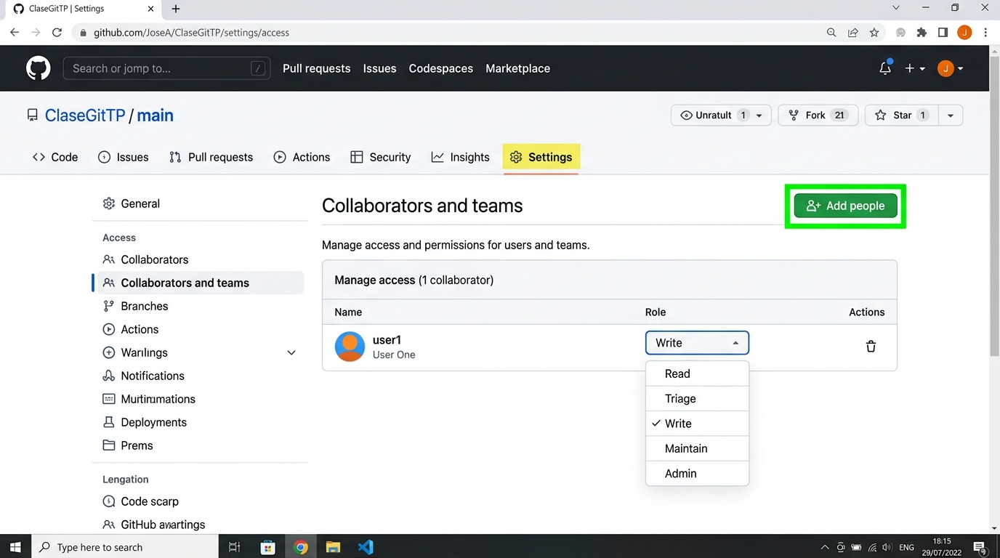
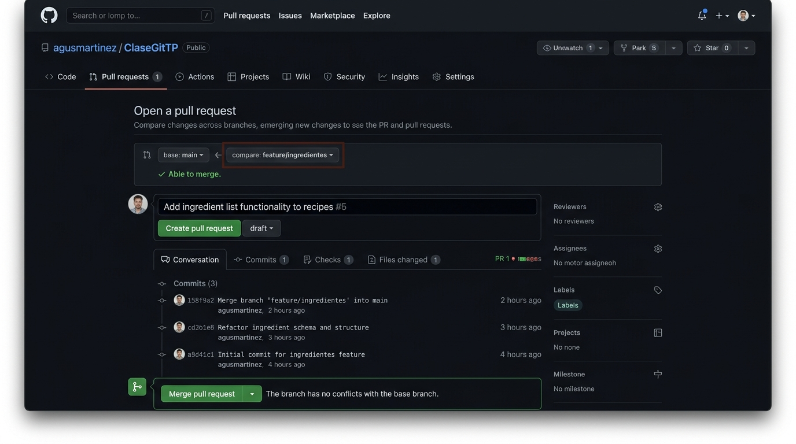
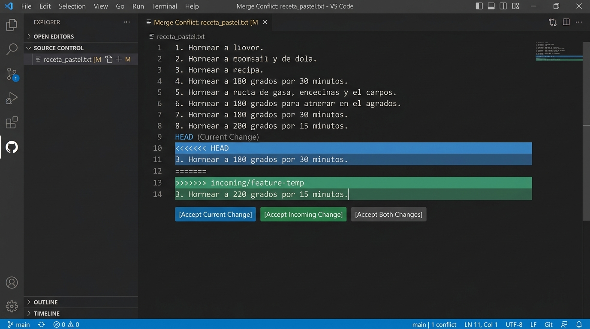
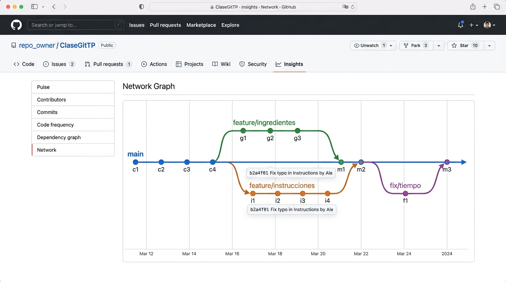

Trabajo Práctico clasegitTP
Flujo de trabajo real en equipo con Git & GitHub: Roles, Ramas en Paralelo, Pull Requests y Resolución Quirúrgica de Conflictos.
Líder / Docente
Inicializa el repo en GitHub, configura rama main y gestiona permisos de colaboradores.
Dev A (Desarrollador A)
Crea estructura base, rama feature/ingredientes, PR en GitHub y rama fix/tiempo-a.
Dev B (Desarrollador B)
Clona con acceso, rama feature/instrucciones, enfrenta conflicto con fetch/merge y lo resuelve.
https://github.com/fiemcasals/ClaseGitTP.git
El Circuito Completo en 5 Fases
Visualiza cómo interactúan los roles y cómo evoluciona el repositorio paso a paso.
Inicialización
git init, README.md, branch -M main y vinculación a GitHub con push -u.
Base del Proyecto
Clona el repo, crea receta.txt base y sube el primer commit a main.
Invitación & Clonado
Se agrega a Dev B como colaborador en GitHub y clona el repositorio en su máquina.
Feature Branches
Dev A (ingredientes) y Dev B (instrucciones). Navegación de ramas, PRs y Merges sin conflicto.
Choque & Resolución
Ambos editan la misma línea del horno. Dev B ejecuta fetch + merge, resuelve marcas y mergea.
Árbol de Commits
Visualización del historial con git log --graph --oneline --all y Network Graph en GitHub.
¿La rama inicial es main por defecto?
Entendiendo la evolución de las ramas principales y el porqué de git branch -M main antes de inicializar.
De master a main
Históricamente en Git la rama creada por defecto al inicializar se llamaba master. En los últimos años, plataformas como GitHub, GitLab y la comunidad internacional estandarizaron el uso de main como nombre predeterminado por inclusión y claridad.
¿Qué hace git branch -M main?
Forzar el renombrado de la rama actual a main.
git branch: Comando para administrar ramas locales.-M(Move / Force): Equivale a--move --force. Renombra la rama activa incluso si ya existe una rama con ese nombre o si hay discrepancias de mayúsculas/minúsculas.
# Si git init creó la rama 'master':
$ git branch
* master
# Forzamos el renombrado a 'main':
$ git branch -M main
# Comprobamos el nuevo estado:
$ git branch
* mainSi subes tu código con el nombre master a un repositorio que GitHub inicializó esperando main, terminarás con dos ramas separadas y desincronizadas.
Paso Inicial: Creación y Vinculación con GitHub
Se crea el repositorio vacío en GitHub y se vincula la máquina local con el primer commit.
$ echo "# ClaseGitTP" >> README.md
$ git init
Initialized empty Git repository in /ClaseGitTP/.git/
$ git add README.md
$ git commit -m "first commit"
[main (root-commit) 8f3a12b] first commit
$ git branch -M main
$ git remote add origin https://github.com/fiemcasals/ClaseGitTP.git
$ git push -u origin main
Enumerating objects: 3, done.
To https://github.com/fiemcasals/ClaseGitTP.git
* [new branch] main -> main
Branch 'main' set up to track remote branch 'main' from 'origin'.echo "# ClaseGitTP" >> README.md
Crea el archivo Markdown base con el título del TP.
git init
Inicializa la base de datos interna de Git en la carpeta .git.
git remote add origin <URL>
Asocia el alias origin a la URL del repositorio remoto en GitHub.
git push -u origin main
Sube el commit. El flag -u (set-upstream) crea un enlace permanente para que en el futuro solo debas escribir git push o git pull.
Paso 1: Clonar el Repositorio Remoto
Dev A descarga la copia completa del proyecto en su estación de trabajo.
# Dev A clona el repositorio desde GitHub:
$ git clone https://github.com/fiemcasals/ClaseGitTP.git
Cloning into 'ClaseGitTP'...
remote: Enumerating objects: 3, done.
Receiving objects: 100% (3/3), done.
# Ingresa al directorio del proyecto:
$ cd ClaseGitTP
# Verifica la rama actual:
$ git status
On branch main
Your branch is up to date with 'origin/main'.
nothing to commit, working tree clean🔍 ¿Qué sucedió tras bambalinas con git clone?
- Descarga íntegra: Descarga todos los archivos (
README.md) y el historial completo de commits. - Configuración automática de
origin: Vincula automáticamente el remoto con la URL de GitHub. - Rama principal activa: Posiciona a Dev A directamente en la rama local
mainsincronizada conorigin/main.
Sintaxis y Límites de git commit -am "mensaje"
Desarmando la combinación de flags y comprendiendo las 3 áreas de Git antes de crear nuevos archivos.
Desglose de los dos flags combinados:
-a (all / tracked)git add en archivos existentes.
-m (message)El flag -a NO incluye archivos nuevos sin seguimiento (untracked). Si creas un archivo nuevo (ej: receta.txt), git commit -am lo ignorará por completo. En ese caso es obligatorio hacer primero git add receta.txt.
git commit -a (Solo Tracked)
⬇️ Salta Staging
git add)git commit -m "..."
⬇️ Guarda Foto
Paso 2 y 3: Crear y Publicar receta.txt
Dev A crea el archivo base de la pizza casera y lo sube directamente a main.
# Receta de Pizza Casera
Ingredientes:
- 500g de harina
Instrucciones:
1. Mezclar la harina con agua.$ git status
Untracked files:
(use "git add <file>..." to include in what will be committed)
receta.txt
$ git add receta.txt
$ git commit -m "docs: agregar estructura inicial de la receta"
[main 4d1b8e9] docs: agregar estructura inicial de la receta
1 file changed, 7 insertions(+)
create mode 100644 receta.txt
$ git push origin main
To https://github.com/fiemcasals/ClaseGitTP.git
8f3a12b..4d1b8e9 main -> mainCiclo de Vida del Archivo
El archivo receta.txt se crea en disco. Git avisa que no está rastreado.
git add receta.txt coloca el archivo en el Staging Area.
git commit -m "..." guarda permanentemente la versión en el historial local.
git push origin main publica los cambios en GitHub para todo el equipo.
Dev B se Incorpora al Proyecto
Permisos de colaboración en la interfaz gráfica de GitHub y clonado del repositorio.

Settings > Collaborators > Add people para invitar a Dev B con permisos Write.# Dev B clona el repositorio:
$ git clone https://github.com/fiemcasals/ClaseGitTP.git
Cloning into 'ClaseGitTP'...
Receiving objects: 100% (6/6), done.
$ cd ClaseGitTP
# Comprueba que ya tiene receta.txt creada por Dev A:
$ ls
README.md receta.txt🎯 Estado al finalizar la Fase 2
Ambos desarrolladores tienen la copia idéntica del repositorio con la rama main sincronizada conteniendo README.md y receta.txt.
¿Cómo crear, listar y cambiar de ramas en Git?
Dominando el movimiento entre ramas con la sintaxis clásica (git checkout) y el comando moderno dedicado (git switch).
¿Qué es realmente una rama?
En Git, una rama no es una copia pesada de archivos; es un puntero móvil y liviano que apunta al último commit realizado en esa línea de desarrollo.
Los dos enfoques para cambiar de rama:
git switch (Moderno - Git 2.23+)git switch -c <nombre> para crear y cambiar, o git switch <nombre> para moverte a una existente.
git checkout (Clásico / Universal)git checkout -b <nombre> para crear y cambiar, o git checkout <nombre> para moverte.
Escribe git switch - (o git checkout -) para saltar instantáneamente a la última rama en la que estabas parado (igual que cd - en la consola).
# 1. Ver ramas existentes y cuál está activa (*):
$ git branch
* main
# 2. Crear y cambiar a una rama nueva:
$ git switch -c feature/ingredientes
Switched to a new branch 'feature/ingredientes'
# (Equivalente clásico: git checkout -b feature/ingredientes)
# 3. Cambiar a una rama ya existente:
$ git switch main
Switched to branch 'main'
# (Equivalente clásico: git checkout main)
# 4. Volver a la rama anterior al instante:
$ git switch -
Switched to branch 'feature/ingredientes'
# 5. Listar todas las ramas (locales + remotas en GitHub):
$ git branch -a
* feature/ingredientes
main
remotes/origin/main📂 ¿Qué le pasa a tus archivos en disco?
Al cambiar de rama, Git actualiza en milisegundos tu carpeta de trabajo (*Working Directory*) para mostrarte exactamente el estado de los archivos en esa rama. Si tienes cambios sin guardar que chocan, Git te alertará para proteger tus datos.
Dev A: Desarrollo de Ingredientes en Rama Separada
Dev A crea su rama de funcionalidad, modifica los ingredientes y sube la rama a GitHub.
# 1. Crear y cambiar a la rama feature/ingredientes:
$ git switch -c feature/ingredientes
Switched to a new branch 'feature/ingredientes'
# (También válido: git checkout -b feature/ingredientes)
# 2. Tras editar receta.txt, registra y sube:
$ git add receta.txt
$ git commit -m "feat: agregar levadura y sal"
[feature/ingredientes 7c2a9f1] feat: agregar levadura y sal
1 file changed, 2 insertions(+)
$ git push origin feature/ingredientes
To https://github.com/fiemcasals/ClaseGitTP.git
* [new branch] feature/ingredientes -> feature/ingredientes # Receta de Pizza Casera
Ingredientes:
- 500g de harina
+ - 10g de levadura
+ - 1 cucharada de sal
Instrucciones:
1. Mezclar la harina con agua.Comando Clave:
git push origin feature/ingredientes
Crea la rama remota en GitHub sin modificar todavía la rama main compartida.
¿Se puede hacer un Pull Request desde la consola nativa?
Dev A acaba de subir su rama remota. ¿Cómo se propone integrar cambios a la rama principal?
Git (Motor CLI Nativo)
Git es una herramienta descentralizada de control de versiones. No incluye el concepto de Pull Request dentro de su especificación nativa.
- Maneja ramas, commits, merges y remotos.
- Comandos nativos:
git push,git fetch,git merge. - No tiene servidor web ni sistema de comentarios/aprobaciones.
GitHub / GitLab / Bitbucket
Plataformas web que añaden una capa colaborativa y social sobre Git. El Pull Request (PR) es su funcionalidad estrella.
- Permite Code Review (revisión de código línea por línea).
- Ejecución de tests automáticos (CI/CD).
- Discusión y aprobación antes de fusionar a
main.
gh) ejecutando gh pr create. Sin embargo, el flujo estándar de la industria y el que utilizaremos en esta práctica se canaliza a través de la interfaz web de GitHub.
Dev A: Apertura y Fusión del Pull Request
Integrando feature/ingredientes en la rama principal main desde la interfaz web.

base: main 🠔 compare: feature/ingredientes con botón verde Merge.Paso a Paso en la Web de GitHub (Dev A):
-
Pestaña Pull Requests: Clic en el botón verde
New Pull Request. -
Configurar ramas: Seleccionar
base: mainycompare: feature/ingredientes. -
Validación automática: GitHub indica
Able to merge(sin conflictos). -
Crear PR: Presionar
Create Pull Requestcon título explicativo. -
Fusión (Merge): Clic en
Merge Pull RequestyConfirm Merge.
main en GitHub ahora contiene la harina, levadura y sal.
Dev B: Trabajo en Paralelo en las Instrucciones
Mientras Dev A trabajaba en ingredientes, Dev B avanza en las instrucciones de cocción.
# 1. Crear y cambiar a la rama feature/instrucciones:
$ git switch -c feature/instrucciones
Switched to a new branch 'feature/instrucciones'
# (También válido: git checkout -b feature/instrucciones)
# 2. Edita receta.txt agregando los pasos 2 y 3:
$ git add receta.txt
$ git commit -m "feat: agregar pasos de leudado y horneado"
[feature/instrucciones 9e4f2a3] feat: agregar pasos de leudado y horneado
1 file changed, 2 insertions(+)
$ git push origin feature/instrucciones
To https://github.com/fiemcasals/ClaseGitTP.git
* [new branch] feature/instrucciones -> feature/instrucciones # Receta de Pizza Casera
Ingredientes:
- 500g de harina
Instrucciones:
1. Mezclar la harina con agua.
+ 2. Dejar leudar 1 hora.
+ 3. Hornear a 200 grados.💡 Detalle Clave del Flujo
Dev B aún no tiene los ingredientes de Dev A en su máquina local. Su rama partió del main original. ¿Qué pasará al fusionar en GitHub?
Dev B: Pull Request y Auto-Merge sin Conflictos
¿Por qué GitHub logró integrar ambas ramas automáticamente sin generar ningún conflicto?
🧠 La Magia del Algoritmo de Merge de Git
Git divide los archivos en bloques de líneas llamados hunks y compara los cambios contra el ancestro común (Common Base):
base: main 🠔 compare: feature/instrucciones
Estado en GitHub (origin/main):
La rama principal remota ya tiene tanto los ingredientes como las instrucciones.
¿Cómo funciona git fetch y cómo inspeccionar sin perder datos locales?
GitHub ya tiene ramas y merges nuevos. Aprende a consultar y leer el servidor remoto de forma segura antes de fusionar.
Descarga todas las novedades (ramas, commits, etiquetas) desde GitHub a tu copia local en los punteros remotos (origin/main), sin tocar ni alterar tu Working Directory ni tus archivos en disco.
- Tus datos y cambios locales no guardados están 100% a salvo.
- Actualiza tu mapa interno de GitHub sin forzar ninguna integración.
Es un atajo compuesto que ejecuta dos pasos consecutivos:
git pull = git fetch + git merge origin/main
Aplica los cambios inmediatamente sobre tus archivos locales de trabajo. Si hay conflicto, salta en el instante.
# 1. Descarga el mapa remoto a tu máquina (sin tocar tus archivos):
$ git fetch origin
From https://github.com/fiemcasals/ClaseGitTP
4d1b8e9..b8a1c92 main -> origin/main
# 2. Revisa qué commits nuevos hay en GitHub que aún no tienes:
$ git log HEAD..origin/main --oneline
b8a1c92 (origin/main) Merge pull request #2 from feature/instrucciones
7c2a9f1 Merge pull request #1 from feature/ingredientes
# 3. Compara diferencias de código entre tu local y el remoto:
$ git diff HEAD origin/main
# 4. Lee el archivo remoto completo sin modificar tu archivo en disco:
$ git show origin/main:receta.txtCon git fetch puedes crear o tener otra rama local con distinto contenido, inspeccionar tranquilamente qué hicieron los demás con git log o git show, y decidir el momento exacto de fusionar.
Sincronización Final de la Fase 3 en Ambas Máquinas
Ambos desarrolladores regresan a main y descargan los cambios integrados con git pull.
# 1. Regresar a la rama principal (con switch o checkout):
$ git switch main
Switched to branch 'main'
# 2. Descargar los merges de GitHub:
$ git pull origin main
remote: Enumerating objects: 8, done.
From https://github.com/fiemcasals/ClaseGitTP
* branch main -> FETCH_HEAD
Updating 4d1b8e9..b8a1c92
Fast-forward
receta.txt | 4 ++++
1 file changed, 4 insertions(+)# Receta de Pizza Casera
Ingredientes:
- 500g de harina
- 10g de levadura <-- Aporte Dev A
- 1 cucharada de sal <-- Aporte Dev A
Instrucciones:
1. Mezclar la harina con agua.
2. Dejar leudar 1 hora. <-- Aporte Dev B
3. Hornear a 200 grados. <-- Aporte Dev BSiempre hacer git switch main y git pull origin main al terminar una tarea para comenzar la siguiente siempre desde la última versión real del equipo.
Paso 1: Dev A Modifica el Tiempo de Horno a 220°C
Dev A crea la rama fix/tiempo-a, edita la línea 3 del horno y la mergea a main en GitHub.
# 1. Crear rama fix/tiempo-a:
$ git switch -c fix/tiempo-a
# 2. Modifica receta.txt: "3. Hornear a 220 grados por 15 minutos."
$ git commit -am "fix: subir temperatura de horneado a 220"
[fix/tiempo-a a18f43c] fix: subir temperatura de horneado a 220
1 file changed, 1 insertion(+), 1 deletion(-)
$ git push origin fix/tiempo-a
To https://github.com/fiemcasals/ClaseGitTP.git
* [new branch] fix/tiempo-a -> fix/tiempo-a Instrucciones:
1. Mezclar la harina con agua.
2. Dejar leudar 1 hora.
- 3. Hornear a 200 grados.
+ 3. Hornear a 220 grados por 15 minutos.fix/tiempo-a y lo mergea de inmediato a main. Ahora el main en GitHub exige 220°C.
Paso 2: Dev B Edita la Misma Línea (Sin Actualizar)
Dev B prefiere cocción lenta a 180°C y edita exactamente la misma línea 3 en fix/tiempo-b.
# 1. Dev B crea su rama fix/tiempo-b:
$ git switch -c fix/tiempo-b
# 2. Modifica la MISMA línea: "3. Hornear a 180 grados por 30 minutos."
$ git commit -am "fix: bajar temperatura a 180 para coccion lenta"
[fix/tiempo-b d92c81a] fix: bajar temperatura a 180 para coccion lenta
1 file changed, 1 insertion(+), 1 deletion(-)
$ git push origin fix/tiempo-b
To https://github.com/fiemcasals/ClaseGitTP.git
* [new branch] fix/tiempo-b -> fix/tiempo-b Instrucciones:
1. Mezclar la harina con agua.
2. Dejar leudar 1 hora.
- 3. Hornear a 200 grados.
+ 3. Hornear a 180 grados por 30 minutos.En GitHub main dice: 220° por 15 min.
En la rama de Dev B dice: 180° por 30 min.
¡Ambos cambios compiten por la misma línea 3!
Paso 3: Dev B Intenta Integrar y Estalla el Conflicto
Dev B actualiza su conocimiento del remoto con fetch e intenta fusionar origin/main en su rama local.
# 1. Dev B consulta el estado real del servidor remoto:
$ git fetch origin
From https://github.com/fiemcasals/ClaseGitTP
b8a1c92..f4d9201 main -> origin/main
# 2. Intenta fusionar origin/main en su rama activa:
$ git merge origin/main
Auto-merging receta.txt
CONFLICT (content): Merge conflict in receta.txt
Automatic merge failed; fix conflicts and then commit the result.🔍 ¿Por qué falló el Merge Automático?
Git no puede tomar decisiones de negocio ni culinarias por sí solo:
- Ambas ramas parten de la misma línea base (
200 grados). - Dev A la cambió a
220 grados por 15 minutos. - Dev B la cambió a
180 grados por 30 minutos. - Git detiene el proceso de merge e inyecta marcas de conflicto en el archivo para que los humanos decidan.
fix/tiempo-b|MERGING
Botón de Emergencia: git merge --abort
¿El conflicto es inmanejable o te equivocaste de rama? Ejecuta git merge --abort para cancelar la fusión al 100%. Git eliminará todas las marcas de conflicto y devolverá tus archivos al estado intacto que tenían antes del merge.
Anatomía de las Marcas de Conflicto de Git
Aprende a leer y desarmar con precisión las marcas inyectadas por Git en receta.txt.

Clic en la imagen para ver cómo resalta los botones VS CodeIndica el inicio del bloque que tú tenías en tu rama local activa (lo que escribió Dev B).
Divisor central. Separa lo tuyo de lo que viene del remoto.
Indica el fin del bloque entrante desde GitHub (lo que mergeó Dev A).
Paso 4: Resolución Manual y Merge Final
Acuerdo en equipo, limpieza de marcas y confirmación del merge en la terminal y en GitHub.
$ git status
Unmerged paths:
(use "git add <file>..." to mark resolution)
both modified: receta.txt
$ git add receta.txt
$ git commit -m "fix: resolver conflicto de temperatura de horneado"
[fix/tiempo-b e83b102] fix: resolver conflicto de temperatura de horneado
$ git push origin fix/tiempo-b
To https://github.com/fiemcasals/ClaseGitTP.git
d92c81a..e83b102 fix/tiempo-b -> fix/tiempo-bLos 4 Pasos Obligatorios:
- 1. Negociar: Dev B consulta a Dev A y acuerdan:
3. Hornear a 200 grados por 20 minutos. - 2. Limpiar: Borrar los delimitadores
<<<<<<<,=======y>>>>>>>. - 3. Notificar a Git: Ejecutar
git add receta.txt(le indica a Git que el conflicto fue resuelto). - 4. Commit de Merge: Ejecutar
git commity subir congit push.
fix/tiempo-b a main y realiza el Merge final sin ningún conflicto restante.
Inspección del Árbol de Ramas por Consola
Desglosando el comando definitivo para ver ramas, bifurcaciones y fusiones en caracteres ASCII.
$ git switch main
$ git pull origin main
$ git log --graph --oneline --all
* 3d910a2 (HEAD -> main, origin/main) Merge PR #4 from fix/tiempo-b
|\
| * e83b102 (origin/fix/tiempo-b, fix/tiempo-b) fix: resolver conflicto de temperatura
| |\
| | * a18f43c (origin/fix/tiempo-a) fix: subir temperatura de horneado a 220
| * | d92c81a fix: bajar temperatura a 180 para coccion lenta
| |/
| * | b8a1c92 Merge PR #2 from feature/instrucciones
|\ \
| * | 9e4f2a3 feat: agregar pasos de leudado y horneado
| |/
* | 7c2a9f1 Merge PR #1 from feature/ingredientes
|\ \
| * | 2a1b9c4 feat: agregar levadura y sal
| |/
* | 4d1b8e9 docs: agregar estructura inicial de la receta
* 8f3a12b first commitDesglose de cada Flag del Comando:
git log
Muestra el historial cronológico de commits del repositorio.
--graph
Dibuja un gráfico en caracteres ASCII mostrando las bifurcaciones y uniones de ramas.
--oneline
Condensa cada commit a una sola línea con su hash corto de 7 caracteres y mensaje.
--all
Muestra los commits de todas las ramas locales y remotas, no solo de la rama activa.
Inspección Visual Interactiva: Insights > Network
Visualización de alto nivel del ciclo de vida del proyecto en la interfaz de GitHub.

Cómo acceder en GitHub:
- Ingresar al repositorio:
https://github.com/fiemcasals/ClaseGitTP - Hacer clic en la solapa superior Insights (o Graphs).
- En el menú lateral izquierdo, seleccionar Network.
🎯 ¿Qué nos revela este gráfico?
- Bifurcaciones claras: Dónde nació cada rama a partir de un commit específico de
main. - Merges trazables: Cuándo y mediante qué commit/PR regresó cada cambio al tronco central.
- Historial inmutable: Registro transparente de quién hizo qué en cada instante del TP.
Resumen Ejecutivo del Circuito Completo
Tabla de roles, comandos ejecutados y las 4 reglas de oro del trabajo en equipo con Git.
| Rol | Acciones Clave en Consola | Acciones en GitHub | Responsabilidad Principal |
|---|---|---|---|
| 👑 Líder / Docente | git init, branch -M main, remote add, push -u |
Crear Repo, Settings > Collaborators | Gobernanza y estructura inicial |
| 👨💻 Dev A | clone, switch -c feature/ingredientes, fix/tiempo-a |
Apertura de PR #1 y PR #3, Merge | Desarrollo de ingredientes y fix A |
| 👩💻 Dev B | clone, switch -c feature/instrucciones, fetch + merge, resolución |
Acepta invitación, PR #2 y PR #4 final | Instrucciones y resolución de conflicto |
| 🔄 Ambos | git switch main & git pull origin main |
Inspección en Insights > Network | Sincronización continua de código |
Pull Frecuente
Ejecuta git pull origin main siempre antes de crear una rama nueva.
Ramas Cortas
Crea ramas específicas para cada funcionalidad y ciérralas rápido con un PR.
Fetch + Merge Preventivo
Actualiza tu rama local con los cambios de main antes de solicitar el PR.
Comunicación Humana
Ante un conflicto, habla con tu compañero antes de borrar código ajeno.
Botón de Pánico
git merge --abort cancela el merge y devuelve todo al estado previo seguro.
Simulador Interactivo del Circuito Git
Haz clic en cada paso para ver la terminal, el archivo receta.txt y el grafo actualizarse en tiempo real.
Pasos del Circuito:
$ echo "# ClaseGitTP" >> README.md
$ git init
$ git add README.md && git commit -m "first commit"
$ git branch -M main
$ git remote add origin https://github.com/fiemcasals/ClaseGitTP.git
$ git push -u origin main
✔ Repositorio publicado exitosamente en GitHubreceta.txt(Archivo aún no creado en este paso)